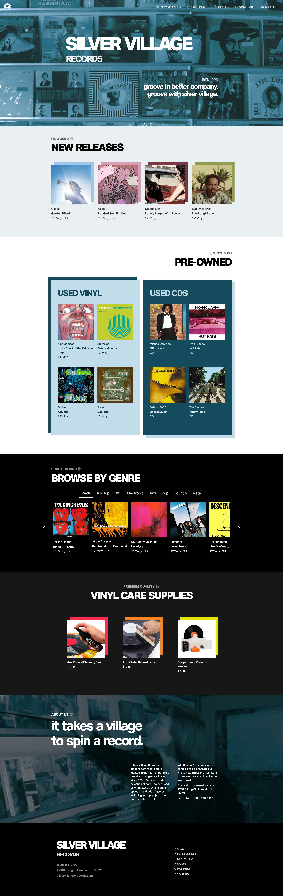

Silver Village Records
Website UI Design
For this project I had to design and code a single page website for Silver Village Records, the fictional record store I created.
You can view the coded site here.
Type:
Student Project
Deliverable:
Website Design
Software:
VS Code, Figma, Illustrator
Skills:
Coding, UI/UX Design
Challenge
The challenge here was in giving this store a distinct brand identity while appealing to as many people as possible and effectively showcasing all the different genres of music for sale on one single page. I also committed to including both new and pre-owned music on the site, which just added to the amount of content I needed to display.
Solution
I designed the brand of Silver Village Records with approachability and community in mind, and that’s reflected even in the name. Customers are part of the “village” as they search through shelves and bins for their favorite record.
To make the site look both distinct and appealing, I largely used a sleek, steel blue monochromatic color scheme and Swiss style typography. I found this to look polished and somewhat chic but not too premium or high-end so as not to alienate any potential customers.
Since the site needed to showcase a large selection of both new and used music across multiple genres, I organized the products into distinct categories such as new releases, used vinyl, used CDs, and genre-specific selections. This allowed me to present a large amount of information without making the page feel cluttered.
Site Map

Type Study
Logo & Icons
Final Design

explore my other work